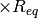

RSE42¶
Database of radical stabilization energies.
Geometries from [E. Soydas and U. Bozkaya, JCTC, 9, 1452-1460 (2013)].
Reference radical stabilization energies from [E. Soydas and U. Bozkaya, JCTC, 9, 1452-1460 (2013)] at CCSD(T)/cc-pCVTZ level.
- benchmark
'RSE42'[E. Soydas and U. Bozkaya, JCTC, 9, 1452-1460 (2013)].
'RSE42' [E. Soydas and U. Bozkaya, JCTC, 9, 1452-1460 (2013)].
[E. Soydas and U. Bozkaya, JCTC, 9, 1452-1460 (2013)].
- subset
'small'<members_description>'large'<members_description>'RSE30'smaller systems in RSE42'<subset>'<members_description>
S22¶
Database (Hobza) of interaction energies for bimolecular complexes.
Geometries from Jurecka et al. PCCP 8 1985 (2006).
First revision to interaction energies (S22A) from Takatani et al. JCP 132 144104 (2010).
Second revision to interaction energies (S22B) from Marshall et al. JCP 135 194102 (2011).
- cp
'off'||'on' - rlxd
'off' - benchmark
'S220'Jurecka et al. PCCP 8 1985 (2006).'S22A'Takatani et al. JCP 132 144104 (2010).-
'S22B' Marshall et al. JCP 135 194102 (2011).
- subset
'small'water dimer, methane dimer, ethene-ethine'large'adenine-thymine'HB'hydrogen-bonded systems'MX'mixed-influence systems'DD'dispersion-dominated systems'S11'smaller systems in S22'WATER'water dimer
A24¶
Database (Hobza) of interaction energies for bimolecular complexes.
Geometries from <Reference>.
Reference interaction energies from Rezac and Hobza, JCTC (in press).
- cp
'off'<erase this comment and after unless on is a valid option> ||'on' - rlxd
'off'<erase this comment and after unless on is valid option> ||'on' - benchmark
'<benchmark_name>'<Reference>.-
'<default_benchmark_name>' <Reference>.
- subset
'small'<members_description>'large'<members_description>'<subset>'<members_description>
BAKERJCC96¶
Geometries from Baker and Chan J. Comput. Chem. 17 888 (1996),
as reported in Bakken and Helgaker, J. Chem. Phys. 117, 9160 (2002).
No reference energies defined.
- cp
'off' - rlxd
'off'
HBC6¶
Database (Sherrill) of interaction energies for dissociation curves of doubly hydrogen-bonded bimolecular complexes.
Geometries from and original reference interaction energies from Thanthiriwatte et al. JCTC 7 88 (2011).
Revised reference interaction energies from Marshall et al. JCP 135 194102 (2011).
- cp
'off'||'on' - rlxd
'off'||'on' - benchmark
'HBC60'Thanthiriwatte et al. JCTC 7 88 (2011).-
'HBC6A' Marshall et al. JCP 135 194102 (2011). 'HBC6ARLX'Sherrill group, unpublished.
- subset
'small''large''equilibrium'equilibrium points for the six systems'FaOOFaOO'dissociation curve for formic acid dimer'FaONFaON'dissociation curve for formamide dimer'FaNNFaNN'dissociation curve for formamidine dimer'FaOOFaON'dissociation curve for formic acid- formamide complex'FaONFaNN'dissociation curve for formamide- formamidine complex'FaOOFaNN'dissociation curve for formic acid- formamidine complex
NBC10¶
Database (Sherrill) of interaction energies for dissociation curves of dispersion-bound bimolecular complexes.
Geometries and Reference interaction energies from the following articles:
Benzene Dimers from Sherrill et al. JPCA 113 10146 (2009).
Benzene-Hydrogen Sulfide from Sherrill et al. JPCA 113 10146 (2009).
Benzene-Methane from Sherrill et al. JPCA 113 10146 (2009).
Methane Dimer from Takatani et al. PCCP 9 6106 (2007).
Pyridine Dimers from Hohenstein et al. JPCA 113 878 (2009).
Collection into NBC10 from Burns et al. JCP 134 084107 (2011).
Revised reference interaction energies (NBC10A) from Marshall et al. JCP 135 194102 (2011).
- cp
'off'||'on' - rlxd
'off' - benchmark
'NBC100'Burns et al. JCP 134 084107 (2011).-
'NBC10A' Marshall et al. JCP 135 194102 (2011).
- subset
'small''large''equilibrium''BzBz_S'dissociation curve for benzene dimer, sandwich'BzBz_T'dissociation curve for benzene dimer, t-shaped'BzBz_PD34'dissociation curve for benzene dimer, parallel displaced by 3.4A'BzH2S'dissociation curve for benzene-H2S'BzMe'dissociation curve for benzene-methane'MeMe'dissociation curve for methane dimer'PyPy_S2'dissociation curve for pyridine dimer, sandwich'PyPy_T3'dissociation curve for pyridine dimer, t-shaped'BzBz_PD32'dissociation curve for benzene dimer, parallel displaced by 3.2A'BzBz_PD36'dissociation curve for benzene dimer, parallel displaced by 3.6A
HTBH¶
Database (Truhlar) of hydrogen-transfer barrier height reactions.
Geometries from Truhlar and coworkers at site http://t1.chem.umn.edu/misc/database_group/database_therm_bh/raw_geom.cgi .
Reference energies from Zhao et al. JPCA, 109 2012-2018 (2005) doi: 10.1021/jp045141s [in supporting information].
- cp
'off' - rlxd
'off' - subset
'small''large'
ACENES¶
Database of Ed and Rob’s favorite linear acene dimers.
Geometries from nowhere special, and reference energies undefined.
- cp
'off'||'on' - rlxd
'off' - subset
'small''large''FIRST3'benzene, napthalene, and anthracene dimers'FIRST5'benzene - pentacene dimers'FIRST10'benzene - decacene dimers
RGC10¶
Database (Sherrill) of interaction energies for dissociation curves of rare-gas biatomic complexes.
Geometries and reference interaction energies from Tang et al. JCP 118 4976 (2003).
- cp
'off'||'on' - rlxd
'off' - subset
'small''large''equilibrium''HeHe'18-point dissociation curve for helium dimer'HeNe'18-point dissociation curve for helium-neon complex'HeAr'18-point dissociation curve for helium-argon complex'HeKr'18-point dissociation curve for helium-krypton complex'NeNe'18-point dissociation curve for neon dimer'NeAr'18-point dissociation curve for neon-argon complex'NeKr'18-point dissociation curve for neon-krypton complex'ArAr'18-point dissociation curve for argon dimer'ArKr'18-point dissociation curve for argon-krypton complex'KrKr'18-point dissociation curve for krypton dimer
BENCH12¶
Database of <description of members and reference energy type>.
Geometries from <Reference>.
Reference interaction energies from <Reference>.
- benchmark
'<benchmark_name>'<Reference>.-
'<default_benchmark_name>' <Reference>.
- subset
'small''large''alkenes''alkanes''acenes''thiophenes''h2o_size''h2o_shape''atoms''S22_HB''S22_MX''S22_DD'
HSG¶
Database (Merz) of interaction energies for bimolecular complexes from protein-indinavir reaction site.
Geometries from and original reference energies from Faver et al. JCTC 7 790 (2011).
Revised reference interaction energies (HSGA) from Marshall et al. JCP 135 194102 (2011).
- cp
'off'||'on' - rlxd
'off' - benchmark
'HSG0'Faver et al. JCTC 7 790 (2011).-
'HSGA' Marshall et al. JCP 135 194102 (2011).
- subset
'small''large'
A24alt¶
Database (Hobza) of interaction energies for bimolecular complexes.
Geometries from <Reference>.
Reference interaction energies from Rezac and Hobza, JCTC (in press).
- cp
'off'<erase this comment and after unless on is a valid option> ||'on' - rlxd
'off'<erase this comment and after unless on is valid option> ||'on' - benchmark
'<benchmark_name>'<Reference>.-
'<default_benchmark_name>' <Reference>.
- subset
'small'<members_description>'large'<members_description>'<subset>'<members_description>
BAKERJCC93¶
Database of molecules that are challenging to optimize.
Geometries from Baker J. Comput. Chem. 14 1085 (1993), as reported
in Bakken and Helgaker, J. Chem. Phys. 117, 9160 (2002), with a few
further corrections.
No reference energies defined.
- cp
'off' - rlxd
'off' - subset
'small''large'
BASIC¶
Database of simple molecules, mostly for testing.
Geometries from nowhere special, and no reference energies defined.
- cp
'off' - rlxd
'off' - subset [
'h2o','nh3','ch4']
S22by5¶
Database (Hobza) of interaction energies for dissociation curves of bimolecular complexes.
Geometries and reference interaction energies from Grafova et al. JCTC 6 2365 (2010).
Note that the S22by5-N-1.0 members are essentially the same geometries as S22-N (there’s trivial round-off error) but the reference interaction energies for S22by5 are of lower quality than those of S22.
- cp
'off'||'on' - rlxd
'off' - subset
'small''large''equilibrium''mol1'five-point (0.9, 1.0, 1.2, 1.5, 2.0)  dissociation curve for molecule 1- ...
'mol22'five-point (0.9, 1.0, 1.2, 1.5, 2.0) dissociation curve for molecule 22
HTR40¶
Database of Hydrogen transfer reactions.
Geometries from Bozkaya and Sherrill.
Reference energies from Bozkaya and Sherrill.
- benchmark
'<benchmark_name>'<Reference>.-
'<default_benchmark_name>' <Reference>.
- subset
'small'<members_description>'large'<members_description>'<subset>'<members_description>
NHTBH¶
Database (Truhlar) of non-hydrogen-transfer barrier height reactions.
Geometries and Reaction energies from Truhlar and coworkers at site http://t1.chem.umn.edu/misc/database_group/database_therm_bh/non_H.htm.
- cp
'off' - rlxd
'off' - subset
'small''large'
JSCH¶
Database (Hobza) of interaction energies for nucelobase pairs.
Geometries and reference interaction energies from Jurecka et al. PCCP 8 1985 (2006).
Corrections implemented from footnote 92 of Burns et al., JCP 134 084107 (2011).
- cp
'off'||'on' - rlxd
'off' - subset
'small''large''HB'hydrogen-bonded systems (coplanar base-pairs)'MX'interstrand systems (adjacent base-pairs on different strands)'DD'stacked systems (adjacent base-pairs on same strand)
S66by8¶
Database (Hobza) of interaction energies for bimolecular complexes.
Geometries and reference interaction energies from Rezac et al. JCTC 7 2427 (2011).
Note that the S66by8-N-1.0 members are not quite the same geometries as S66-N.
- cp
'off'||'on' - rlxd
'off' - subset
'small''large''equilibrium''HB'eight-point (0.9, 0.95, 1.0, 1.05, 1.1, 1.25, 1.5, 2.0) dissociation curve hydrogen-bonded systems'MX'eight-point (0.9, 0.95, 1.0, 1.05, 1.1, 1.25, 1.5, 2.0) dissociation curve mixed-influence systems'DD'eight-point (0.9, 0.95, 1.0, 1.05, 1.1, 1.25, 1.5, 2.0) dissociation curve dispersion-dominated systems
NCB31¶
Database (Truhlar) of several classes of noncovalent interactions.
Geometries from Truhlar and coworkers at site http://comp.chem.umn.edu/database_noncov/noncovalent.htm
Reference energies from Truhlar and coworkers at site http://comp.chem.umn.edu/database_noncov/noncovalent.htm
First comprehensive citation JPCA 109 5656 (2005).
- cp
'off'||'on' - rlxd
'off'||'on' - benchmark
'<benchmark_name>'<Reference>.-
'<default_benchmark_name>' <Reference>.
- subset
'small'3: HF-HF, He-Ne, HCCH-HCCH'large'1: BzBz_PD'HB6'hydrogen-bonded'CT7'charge-transfer'DI6'dipole-interacting'WI7'weakly interacting'PPS5'pi-pi stacking